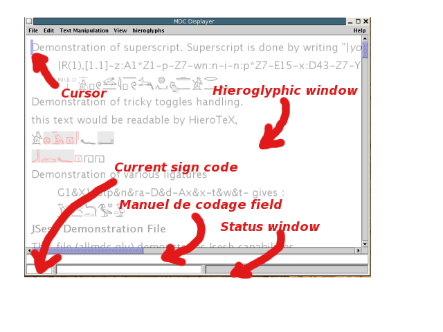

Overview of the JSesh Window

Currently, JSesh's working space contains a menu, a main editing
window (the "hieroglyphic window" above), and a number of fields.
The field termed "Manuel de Codage field" contains the Manuel
de codage code for the current line of text (the one pointed
by the cursor). You can modify directly this code ; the field
termed "current sign code" is used in interractive editing to show
the code for the currently edited text. the field directly
right to it is a message field. It isn't of much use currently.
ROSMORDUC Serge
Last modified: Wed Nov 10 01:11:33 CET 2004